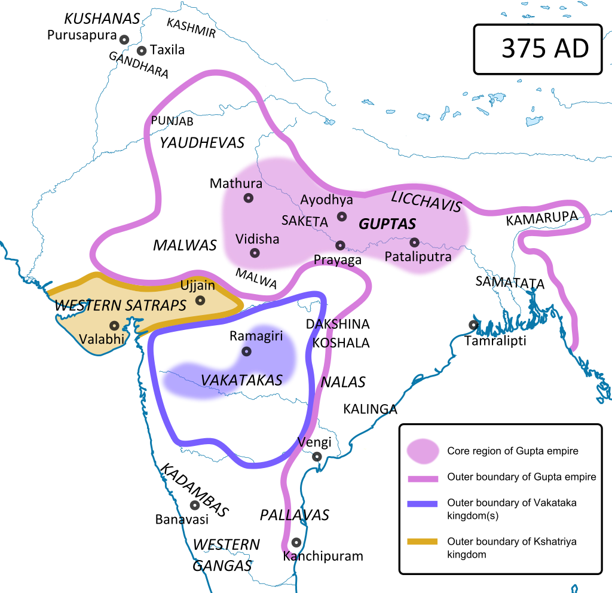

The Gupta Age (3rd to 5th Century A.D)
Origins
- Sri Gupta is the founder of the Gupta empire
- Considered as the Golden Age of Ancient India
- Guptas belonged to the Vaishya caste
Chandragupta I (319 - 335 A.D)
- Raised the power and prestige of his dynasty by conquest and matrimonial alliances
- Married Lichhavi princess Kumara Devi
- Issued Chandragupta I KumaraDevi type gold coins
- Started Gupta Era - 320 A.D
- Adopted the title of Maharajadhiraja
Samudragupta (335 - 390 A.D)

- VA Smith called him Napoleon of India
- Long inscription in Allahbad Prayag Prasasthi enumarated by his court poet Harisena informs about the people and places conquered by Samudragupta
- Virasena was his commander in chief during his southern campaign and Buddhist scholar Vasubandhu was his minister
- Annexed territories after defeating Northern monarchs but did not annex southern territories
- Composed numerous poems,some of his coins potray him playing the veena
- Allahabad pillar inscription mention him as the Dharma Prachar Bandhu
- He was a Vaishnavite
Chandragupta II (390 - 415 A.D)
- Samudragupta was succeeded by Ramagupta who was a coward. He is the only Gupta ruler to issue copper coins
- He surrendered his queen Dhruvadevi to the Saka invaders
- Chandragupta II invaded the Sakas and killed their leader as well as Ramagupta and married Dhruvadevi
- He conquered Western Malwa and Gujarat from the Saka ruler, and Ujjain became his second capital
- He married his daughter Pravhabati to the Vakataka king Rudrasena
- He issued silver coins and adopted the titles of Sakari and Bikramaditya
- His court in Ujjain was adorned by nine scholars known as the Navaratnas
- Harisen was his court poet and minister
- Chinese pilgrim Fa Hien visited India in his time
Kumargupta II (415 - 455 A.D)
- He founded Nalanda University
- Worshipper of lord Kartikeya
- During the last year of his reign his empire was invaded by the Hunas
- He died during the war with the Hunas
Skandagupta II (455 - 467 A.D)
- Defeated the Hunas twice (adopted the title of Vikramaditya)
- Repaired lake Sudarshana
- Empire was weakened by the repeated Huna attacks
- Gupta empire stated to decline after his death